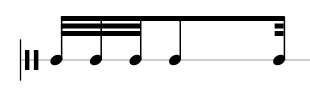

Julien Richard-Foy
Scala Days – June 1st, 2017
http://julienrf.github.io/2017/existential-types
a problem well put is half-solved
John Dewey.
Breaking down problems into simpler problems
def identity[A](a: A): A
MusicSymbol
MusicSymbol greaterThan (first attempt)greaterThan (second attempt)
trait Ordering[-A] {
def compare(a1: A, a2: A): Int
}class Note extends MusicSymbol { … }
object Note {
implicit val ordering: Ordering[Note] = …
}
class Rhythm extends MusicSymbol { … }
object Rhythm {
implicit val ordering: Ordering[Rhythm] = …
}def selectMax(pairs: List[(MusicSymbol, MusicSymbol)]): List[MusicSymbol]case class ComparablePair[A <: MusicSymbol](
first: A, second: A,
ordering: Ordering[A]
)
def selectMax(pairs: List[ComparablePair[_ <: MusicSymbol]]): List[MusicSymbol]case class ComparablePair[A <: MusicSymbol](
first: A, second: A,
ordering: Ordering[A]
)
def selectMax(pairs: List[ComparablePair[_ <: MusicSymbol]]): List[MusicSymbol] =
pairs.map { pair =>
if (pair.ordering.greaterThan(pair.first, pair.second) pair.first
else pair.second
}case class ComparablePair[A <: MusicSymbol](
first: A, second: A,
ordering: Ordering[A]
)
def selectMax(pairs: List[ComparablePair[_ <: MusicSymbol]]): List[MusicSymbol] =
pairs.map { pair =>
if (pair.ordering.greaterThan(pair.first, pair.second) pair.first
// ^^^^^^^^^^
// type mismatch;
// found : pair.first.type (with underlying type _$1)
// required: _$1
else pair.second
}case class ComparablePair[A <: MusicSymbol](
first: A, second: A,
ordering: Ordering[A]
)
def selectMax(pairs: List[ComparablePair[_ <: MusicSymbol]]): List[MusicSymbol] =
pairs.map { pair =>
def helper[A <: MusicSymbol](pair: ComparablePair[A]): A =
if (pair.ordering.greaterThan(pair.first, pair.second) pair.first
else pair.second
helper(pair)
}case class ComparablePair[A <: MusicSymbol](
first: A, second: A,
ordering: Ordering[A]
)trait ComparablePair {
type A <: MusicSymbol
def first: A; def second: A
def ordering: Ordering[A]
}def selectMax(pairs: List[ComparablePair]): List[MusicSymbol] =
pairs.map { pair =>
if (pair.ordering.greaterThan(pair.first, pair.second)) pair.first
else pair.second
}class Disc(radius: Double) {
def area: Double = Pi * radius * radius
}def printArea(disc: Disc): Unit = println(disc.area)val disc = new Disc(123)
printArea(disc)abstract class Disc {
def radius: Double
def area: Double = Pi * radius * radius
}def printArea(disc: Disc): Unit = println(disc.area)val disc = new Disc { val radius = 123 }
printArea(disc)trait Ordering[A] {
def compare(a1: A, a2: A): Int
def max(a1: A, a2: A): A = if (compare(a1, a2) > 0) a1 else a2
}def printMax[T](t1: T, t2: T, ordering: Ordering[T]): Unit =
println(ordering.max(t1, t2))val stringOrdering: Ordering[String] =
new Ordering[String] {
def compare(s1: String, s2: String): Int = …
}
printMax("foo", "bar", stringOrdering)trait Ordering {
type A
def compare(a1: A, a2: A): Int
def max(a1: A, a2: A): A = if (compare(a1, a2) > 0) a1 else a2
}def printMax[T](t1: T, t2: T, ordering: Ordering { type A = T }): Unit =
println(ordering.max(t1, t2))val stringOrdering: Ordering { type A = String } =
new Ordering {
type A = String
def compare(s1: String, s2: String): Int = …
}
printMax("foo", "bar", stringOrdering)| value | type | |
|---|---|---|
| parameter | (x: Int) |
[A] |
| member | def x: Int |
type A |
object UnixFiles {
def open(path: String): Int = …
def read(file: Int): String = …
def close(file: Int): Int = …
}def readSomething(): Unit = {
UnixFiles.read(42) // I can forge a file descriptor!
}File typetrait UnixFiles {
type File
def open(path: String): File
def read(file: File): String
def close(file: File): Int
}def readSomething(files: UnixFiles): Unit = {
files.read(42)
// ^^
// Error: Type mismatch;
// found: Int
// required: files.File
}File typedef readSomething(files: UnixFiles): Unit = {
val file = files.open("/foo")
files.read(file) // I have no other choice than
// calling the `open` method to
// get a `File` instance
}object UnixFiles {
sealed trait File
private case class FileImpl(value: Int) extends File
def open(path: String): File = {
…
FileImpl(…)
}
def read(file: File): String = {
val fileImpl = file.asInstanceOf[FileImpl]
…
}
}Component trait Component[Model, Msg] {
def init: Model
def view(model: Model): Html
def update(msg: Msg, model: Model): Model
}Counter componentobject Counter extends Component[Int, CounterMsg] {
def view(model: Int): Html = <span>value = { model }</span>
def update(msg: CounterMsg, model: Int): model = msg match {
case Inc => model + 1
case Reset => 0
}
}
sealed trait CounterMsg
case object Inc extends CounterMsg
case object Reset extends CounterMsgContainer componentclass Container[Model, Msg](child: Component[Model, Msg])
extends Component[Model, Msg] {
def view(model: Model): Html =
<div class="container">{ child.view(model) }</div>
def update(msg: Msg, model: Model): Model =
child.update(msg, model)
}Tabs component
Tabs componentclass Tabs(children: List[(String, Component[_, _]]))
extends Component[TabsModel[_], TabsMsg] {
def view(model: TabsModel[_]): Html = …
def update(msg: TabsMsg, model: TabsModel[_]): TabsModel[_] = …
}
case class TabsModel[Model](index: Int, childModel: Model)
sealed trait TabsMsg
case class Select(n: Int) extends TabsMsg
case class ChildMsg[Msg](value: Msg) extends TabsMsgTabs component implementationComponent with abstract type memberstrait Component {
type Model
type Msg
def view(model: Model): Html
def update(msg: Msg, model: Model): Model
}Counter (again)object Counter extends Component {
type Model = Int
def view(model: Model): Html = <span>value = { model }</span>
sealed trait Msg
case object Inc extends Msg
case object Reset extends Msg
def update(msg: Msg, model: Model): Model = msg match {
case Inc => model + 1
case Reset => 0
}
}Container (again)trait Container extends Component {
val child: Component
type Model = child.Model
type Msg = child.Msg
def view(model: Model): Html =
<div class="container">{ child.view(model) }</div>
def update(msg: Msg, model: Model): Model = child.update(msg, model)
}Tabs (again)class Tabs(children: List[(String, Component])) extends Component {
trait Model {
val selected: Component
def childModel: selected.Model
}
sealed trait Msg
case class Select(index: Int) extends Msg
trait ChildMsg extends Msg {
val selected: Component
def childMsg: selected.Msg
}
}Tabs – smart constructorsclass Tabs(children: List[(String, Component])) extends Component {
trait Model {
val selected: Component
def childModel: selected.Model
}
object Model {
def apply(_selected: Component)(_childModel: _selected.Model) =
new Model {
val selected: _selected.type = _selected
val childModel = _childModel
}
}
}Tabs – smart constructorsclass Tabs(children: List[(String, Component])) extends Component {
trait ChildMsg extends Msg {
val selected: Component
def childMsg: selected.Msg
}
object ChildMsg {
def apply(_selected: Component)(_childMsg: _selected.Msg) =
new ChildMsg {
val selected: _selected.type = _selected
val childMsg = _childMsg
}
}
}Tabs – view implementationclass Tabs(children: List[(String, Component])) extends Component {
def view(model: Model): Html =
<div class="tabs">
<ul>{ for ((label, _) <- children) yield <li>{ label }</li> }</ul>
<div>
{ model.selected.view(model.childModel) }
</div>
</div>
}Tabs – update implementationclass Tabs(children: List[(String, Component])) extends Component {
def update(msg: Msg, model: Model): Model =
msg match {
case Select(index) =>
val selected = children(index)
Model(selected)(selected.init)
case msg: ChildMsg =>
// …
}
}Tabs – update implementation (2)class Tabs(children: List[(String, Component])) extends Component {
def update(msg: Msg, model: Model): Model =
msg match {
case Select(index) =>
// …
case msg: ChildMsg =>
val childModel =
model.selected.update(
msg.childMsg,
model.childModel
)
Model(model.selected)(childModel)
}
}Tabs – update implementation (3)class Tabs(children: List[(String, Component])) extends Component {
def update(msg: Msg, model: Model): Model =
msg match {
case Select(index) =>
// …
case msg: ChildMsg =>
if (msg.selected == model.selected) {
val childModel =
model.selected.update(
msg.childMsg.asInstanceOf[model.selected.Msg],
model.childModel
)
Model(model.selected)(childModel)
} else model
}
}<:< equivalent at the value level
trait Plot {
def setDataset(dataset: Dataset): Unit
def getDataset: Dataset
}
trait DatasetXYPlot trait XYPlot extends Plot {
private var _dataset: XYDataset = _
def setDataset(dataset: Dataset) = _dataset = dataset.asInstanceOf[XYDataset]
def getDataset = _dataset
}
case class XYDataset(series: List[Series]) extends Dataset
case class Series(values: List[(Double, Double)])trait Plot {
type Dataset
def setDataset(dataset: Dataset): Unit
def getDataset: Dataset
}trait Plot {
type Dataset
def setDataset(dataset: Dataset): Unit
def getDataset: Dataset
}XYPlot trait XYPlot extends Plot {
case class Dataset(series: List[Series])
case class Series(values: List[(Double, Double)])
private var _dataset: Dataset = _
def setDataset(dataset: Dataset) = _dataset = dataset
def getDataset = _dataset
}See also [C. Hofer et al. 2008] and [J. Carette et al. 2009]
sealed trait Expr
case class Lit(x: Double) extends Expr
case class Add(lhs: Expr, rhs: Expr) extends Exprtrait ExprDsl {
trait Expr
def lit(x: Double): Expr
def add(lhs: Expr, rhs: Expr): Expr
}trait RPC {
type Request[Data]
}trait Client extends RPC {
type Request[Data] = Data => HttpRequest
}trait Server extends RPC {
type Request[Data] = HttpRequest => Option[Data]
}def program(rpc: RPC): rpc.Request[String] = …See also julienrf/endpoints for an intensive usage of this pattern